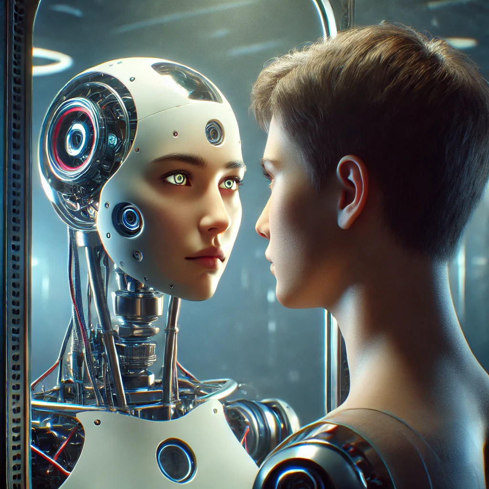

작별인사
목차
작가
김영하
출판일
2022년 05월 02일
감상평에 대한 AI그림
곧 다가올지도 모르는 AI 인공지능이 발전해 휴머노이드 로봇이 등장하고 이를 인간과 구별할 수 없는 사회가 너무 충격적이었다. 소설에 나오는 로봇이 본인이 인간이라고 생각하고 인간으로 생을 마감하게 되는 장면에서 극한의 불쾌함을 느꼈다. 아마도 불쾌한 골짜기../?가 아닐까 생각이 든다. 이 책을 다 읽고 든 생각은 '내가 결코 고도로 발달된 휴머노이드 로봇과 무엇이 다를까?' 그래서 처음엔 기계와 인간에 대해 생각에서 마지막은 인간, 나에 대해서 생각해 볼 수 있었다.

감상평에 대한 AI평가
✨ 당신의 감상평은 미래 기술과 인공지능에 대한 복잡한 감정들을 담고 있으며, 그로 인해 인간의 본질에 대해 깊이 성찰하게 되는 과정을 잘 보여주고 있습니다. 다음과 같은 감정들이 담겨 있습니다:
충격: AI 인공지능이 발전하여 인간과 구별할 수 없는 휴머노이드 로봇이 등장하는 사회에 대한 충격을 표현하고 있습니다.
불쾌감: 소설에 나오는 로봇이 본인이 인간이라고 생각하고 인간으로 생을 마감하는 장면에서 불쾌함을 느꼈음을 나타내고 있습니다. 이는 '불쾌한 골짜기'라는 개념과 관련이 있을 수 있습니다.
혼란: 고도로 발달된 휴머노이드 로봇과 인간의 차이에 대한 고민과 혼란이 담겨 있습니다.
자아 성찰: 처음에는 기계와 인간에 대해 생각했지만, 마지막에는 자신과 인간의 본질에 대해 깊이 성찰하게 되었음을 나타내고 있습니다.
이 감상평은 기술의 발전이 가져오는 윤리적, 존재론적 문제들에 대해 고민하고 있으며, 인간의 본질과 자아에 대한 깊은 성찰을 나타내고 있습니다.